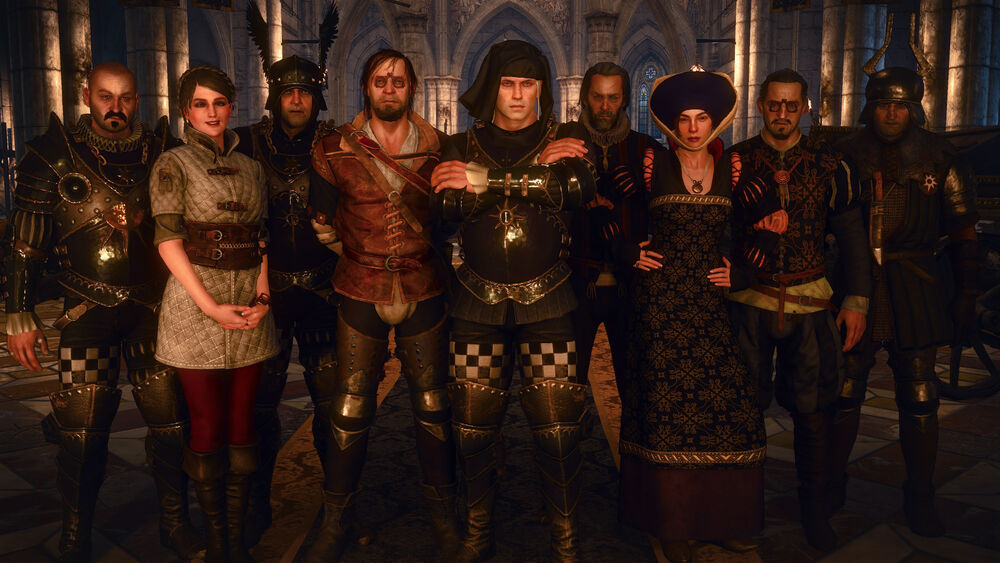
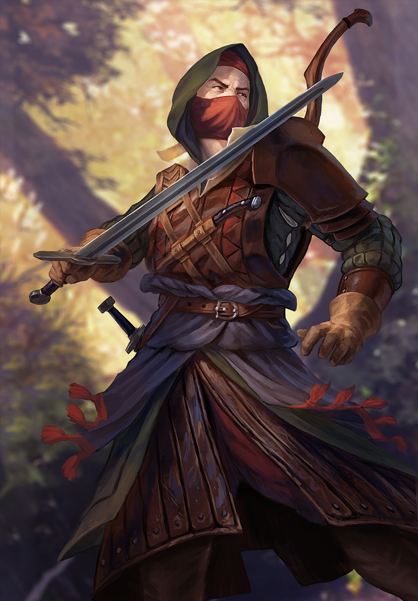
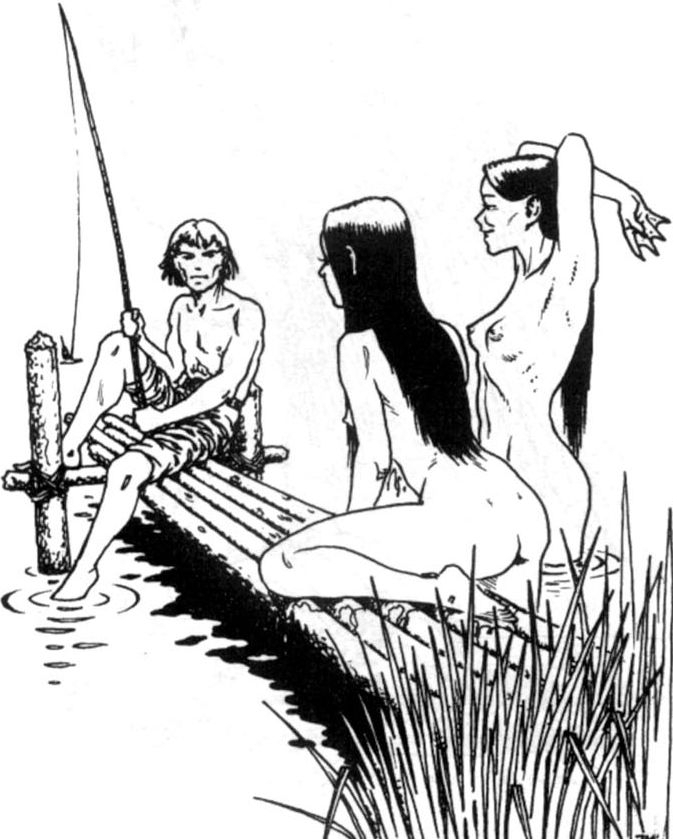
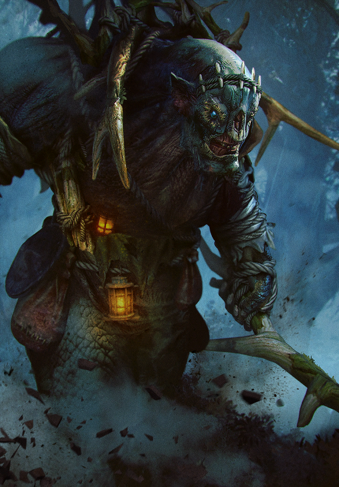
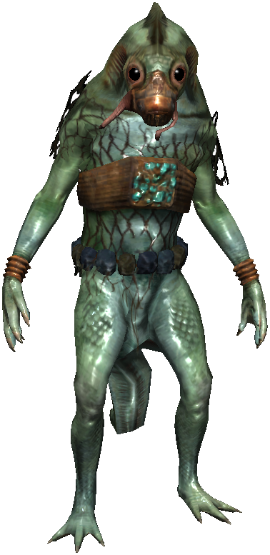
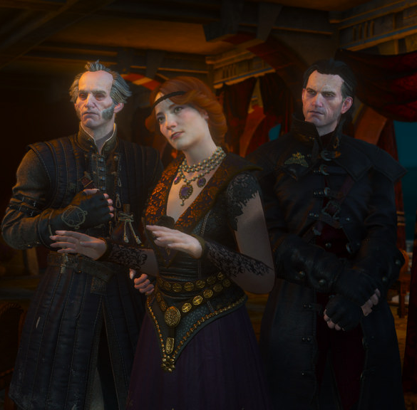

En la actualidad el mundo es habitado por diferentes razas y culturas, pero en los ultimos cinco siglos los seres humanos
fueron la mayoria absoluta. Al norte, sus tierras se dividen entre varios reinos de orgullosos guerreros que lucharon
entre si sin cesar y en contra de su vecino del sur, el poderoso Imperio Nilfgaardiano. Despues de conquistar los territorios
menores mas proximos, en las ultimas decadas, este Nilfgaard comenzo una marcha inexorable hacia el norte, constantemente
tratando de ampliar sus fronteras. Nilfgaard y los reinos del norte ya se enfrentaron en dos grandes gerras, pero esta es la
actual confrontacion, la Tercera Guerra del Norte, para muchos, decidira el destino de este mundo.
La era de las otras razas ha terminado. Elfos, enanos y otras especies se vieron obligadas a convivir con los seres humanos
en un mundo dominado por la raza humana, que por lo general signifeca tener que enfrentarse a la discriminacion,
el ostracismo y la vida en los guetos. El prejuicio racial, la intolerancia y el odio son la rutina diaria. Los inhumanos
que no aceptaron esa carga se vieron obligados a regresar a los bosques y a las montañas distantes. Empujados a los confines
del mundo, sus territorios independientes, ellos llevan a cabo una guerra para mantener lo que queda de su dignidad
y las numerosas atrocidades comentidas por ambos bandos solo sirve para aumentar aun mas la brecha entre los humanos
y los no humanos.
Los elfos son una de las razas humanoides que habitan el Continente. Los elfos conocidos como Aen Seidhe se trasladaron
al Continente en sus naves blancas mucho antes que los humanos, pero después que los gnomos y enanos. Los elfos viven mucho
más que los humanos y suelen ser muy atractivos.
Los elfos son capaces de aparearse con los humanos (medioelfos) y con las dríadas. Aunque los elfos son increíblemente longevos,
solo los elfos jóvenes son fértiles, por lo que las poblaciones élficas tienden a reproducirse a un ritmo más lento que los
humanos.
Como otros no humanos, los elfos han sido a menudo perseguidos por los Nordlings. Por eso, muchos elfos se alistaron en la
guerrilla scoia'tael con Nilfgaard durante la invasión de los Reinos del Norte por el Imperio. A cambio, el Emperador Emhyr var
Emreis les concedió un estado propio en Dol Blathanna y nombró a Enid an Gleanna como su reina.
Los elfos tienen la creencia que fueron creados, a diferencia de los humanos, que evolucionaron. Por este motivo, algunos
elfos consideran a los humanos como poco menos que simios sin pelo.
Además de los Aen Seidhe, existe otro grupo de elfos llamados Aen Elle que habitan otro mundo.
Los enanos son una de las razas humanoides. Junto a los gnomos y los elfos forman las llamadas Razas Antiguas, y con los gnomos
constituyen unas de las razas más antiguas del Continente. Un enano adulto llega a crecer tan alto como el torso de un humano.
Son más robustos que los humanos, lo que les hace más duros y fuertes. Normalmente llevan largas barbas. Los enanos suelen ser
excelentes soldados, artesanos y hombres de negocio. Siempre que no se sientan amenazados, son amigables y divertidos.
Las patria de los enanos es Mahakam. Como otros no humanos, los enanos son a menudo perseguidos por los Nordlings. Por eso, algunos
enanos se convirtieron en miembros de las guerrillas de scoia'tael, aliados de Nilfgaard durante la invasión de los Reinos del Norte
por el Imperio.
Los gnomos son la raza más antigua del Continente y junto a los enanos y elfos forman las Razas Antiguas.
Muchos gnomos viven en Mahakam junto a los enanos,[5] aunque algunos habitan en la zona del monte Tir Tochair.[6] Son excelentes
herreros y sus espadas gwyhyr son consideradas como las mejores del mundo.
Las dríadas, también conocidas como rariesposas por los humanos y llamadas Aen Woedbeanna en la Lengua Antigua, son las
ninfas de los bosques, habitantes y guardianas del reino boscoso de Brokilón. Nacidas a través de contactos sexuales con
otras razas o transformadas por el Agua de Brokilón, son exclusivamente mujeres y sus descendientes permanecen así durante
muchas generaciones, incluso sin beber el agua.
Las dríadas transformadas son conocidas como dríadas naturalizadas, mientras que la subraza de dríadas que tienen la
conexión más profunda con el bosque y son simbióticas con un árbol dado son llamadas hamadríadas.
Los humanos son la raza predominante en los Reinos del Norte y en el Imperio de Nilfgaard. Cuando se trasladaron al Continente, conquistaron las tierras de los elfos. Desde entonces, los humanos se establecieron como la raza dominante y los elfos, enanos, gnomos y medianos terminaron siendo considerados como "no humanos".
 Volver a inicioLos medianos, a veces llamados hobbits,[2] son una de las razas no humanas y, a pesar del nombre, en realidad son una
raza distinta y no mixta, como los medioelfos.
A diferencia de los gnomos y enanos con quienes tienen mejores relaciones, los medianos no poseen ningún dominio en el Continente.
En cambio, viven en países humanos de los Reinos del Norte y en el Imperio Nilfgaardiano.
Un medioelfo es hijo de un humano y un elfo o de dos medioelfos. Los medioelfos heredan las características de las razas de sus padres, pero son tratados con desconfianza y a menudo con desprecio tanto por los elfos como por los humanos. Un humano con 1/4 de sangre de elfo es conocido como cuarterón.
 Volver a inicioLas náyades, más comúnmente conocidas como rusalkas, son las ninfas de los lagos y ríos. Al igual que sus primas del bosque, las dríadas, las náyades son exclusivamente mujeres y a veces se dice que secuestran a niñas humanas para transformarlas en ninfas, aunque prefieren formas de reproducción más tradicionales.
 Volver a inicioLos trols son enormes criaturas humanoides. Poseen un cierto nivel de inteligencia y son capaces de emplear frases simples para comunicarse entre ellos y con los humanos, mientras que otros son incluso capaces de dibujar[1] o escribir.[2] Suelen vivir en medio de la naturaleza, pero también bajo puentes (a menudo construidos por ellos mismos) en los que cobran peaje a los viajeros. Antiguamente los brujos mataban trols, pues algunos de ellos comen carne humana, sin embargo, actualmente la gente se ha acostumbrado a la presencia de estas criaturas, sobre todo debido a que pagar a un trol resulta más barato que el mantenimiento habitual de un puente.
 Volver a inicioLos vodyanoi, también conocidos como la gente pez o las criaturas con ojos de pez, son una raza inteligente que vive en ciudades submarinas en el fondo del Gran Mar, donde su civilización es más avanzada, así como el río Pontar y sus afluentes.
 Volver a inicioUn vampiro es un término usado para referirse a un número de criaturas que se alimentan de sangre, que contiene la fuerza vital de sus víctimas.
Los hombres -los educados, al menos-
me considerarían un monstruo.
Un engendro que bebe sangre.

Volver a inicio